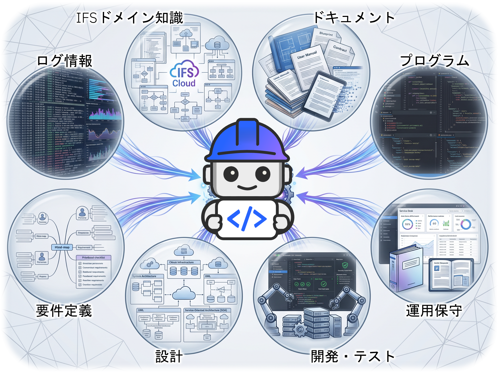
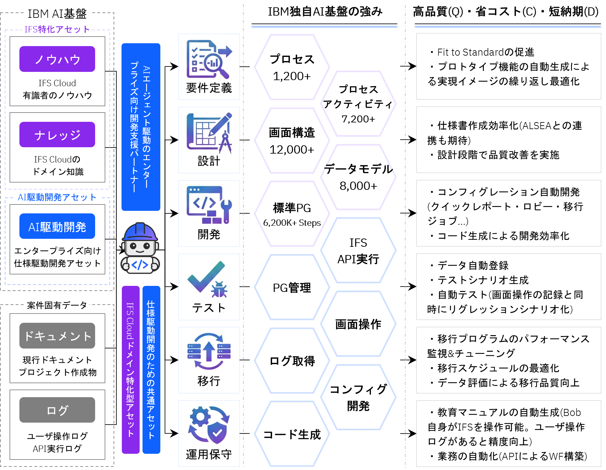

AI エージェントが、IFS Cloud 導入のすべてのフェーズを支援する
要件定義・設計・開発・テスト・移行・運用保守まで、プロジェクト全体を一気通貫でカバーします。

IBM AI基盤の仕組み
IFS Cloud 導入に必要なノウハウ・ナレッジ・AI駆動開発アセットを一体化。プロジェクト全フェーズを通じて高品質（Q）・省コスト（C）・短納期（D）を実現します。

すべての開発を、仕様書を起点に動かす
Spec Kit とは、AIが一貫した品質で成果物を生成するための「仕様の標準パッケージ」です。設計ルール・コーディング規約・テスト基準といった開発の共通知識をAIが参照できる形に整備することで、担当者ごとの解釈のズレをなくし、仕様書を起点に設計・コード・テストを連鎖的に生成できます。
IBM ALSEA（AI Lifecycle Shared Engineering Artifacts） は、IBM が長年の大規模開発で蓄積したノウハウを体系化した IBM 独自の Spec Kit です。ALSEA を組み合わせることで、標準化されたコンテキストをAIに提供し、さらに高品質なプロジェクトを実現します。
本サイトは IFS Cloud の活用シナリオをご紹介するソリューションサンプル集です。各ページでは実際の画面イメージ・操作フロー・期待効果をご確認いただけます。
導入検討・提案資料作成にご活用ください。詳細なデモや個別相談については、下記までお問い合わせください。
IFS 担当チーム ifs_support@wwpdl.vnet.ibm.com